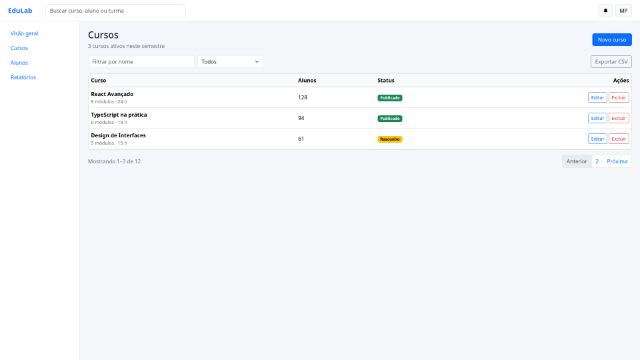
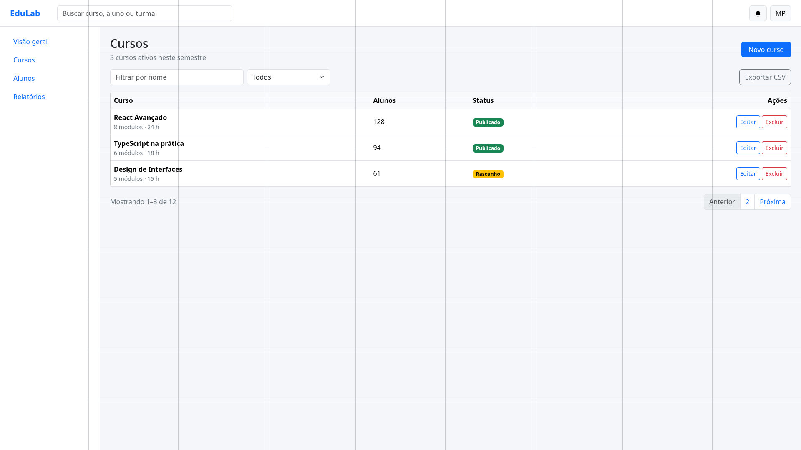
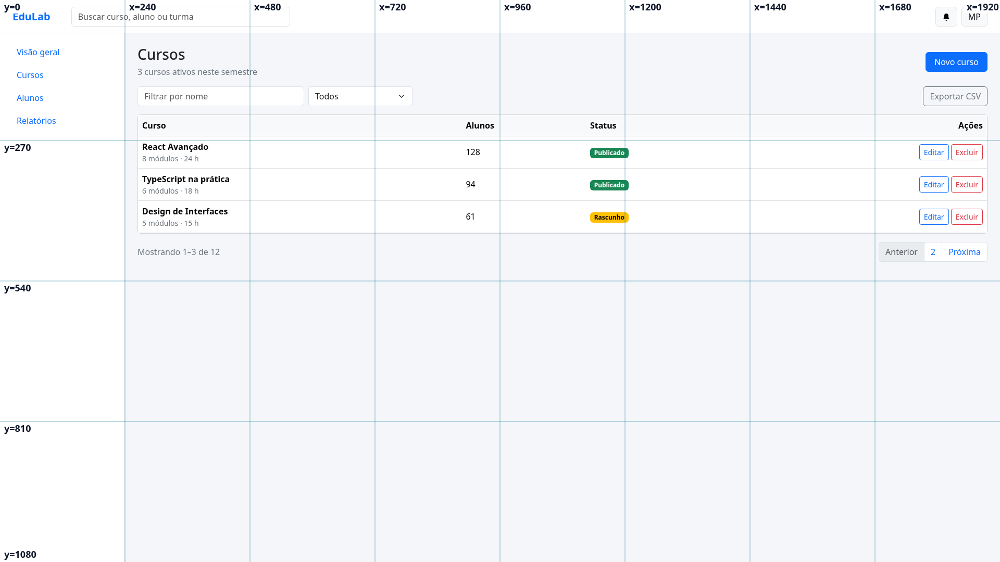
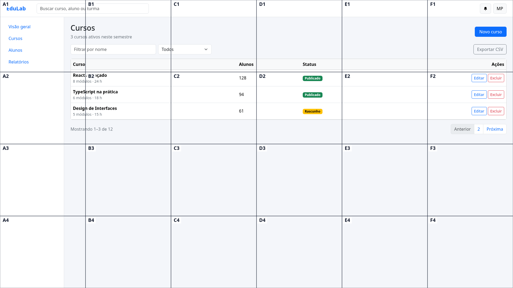
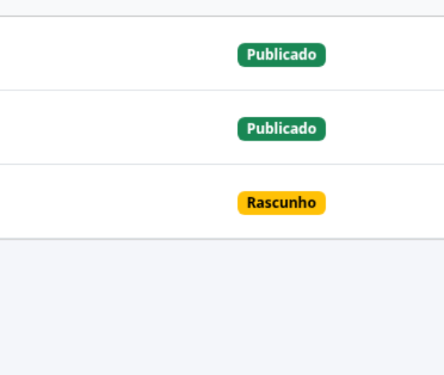

Benchmarks 1 e 2 — resolução e grade
Os dois bancos mudam uma coisa só na apresentação da mesma tela. A verdade continua sendo o DOM; o placar é determinístico. Nada de juiz LLM.
1. Resolução — a mesma tela, quatro escalas
Nota = média do F1 entre as escalas. A coordenada volta para 1920×1080 antes de pontuar. Retenção = F1 em 360p ÷ F1 em 1080p.
| modelo | nota | 1080p | 720p | 540p | 360p | retenção | custo | latência |
|---|---|---|---|---|---|---|---|---|
| GLM 5.3 Flash | 76.2% | 92.2% | 88.7% | 71.6% | 52.3% | 56.7% | $0.0179 | 10.3 s |
| MiMo V2.6-Pro | 60.4% | 82.4% | 62.9% | 62.2% | 34.1% | 41.4% | $0.0506 | 55.5 s |
| DeepSeek V4.1 Flash | 54.7% | 69.0% | 73.1% | 60.0% | 16.7% | 24.2% | $0.0186 | 31.1 s |
2. Grade — controle × overlays
Taxa de acerto de 30 tarefas por variante. plain é o controle; a nota é a média das quatro. Mark-Grid-lite usa 1 célula 6×4 e recorte ampliado em 2ª rodada — não é o Mark-Grid do paper (4 IDs/8×8/crop 512).
| modelo | nota | plain | 9×9 | eixos | Mark-Grid-lite | Δ vs plain | alvo geral | custo | latência |
|---|---|---|---|---|---|---|---|---|---|
| MiMo V2.6-Pro | 70.8% | 70.0% | 70.0% | 73.3% | 70.0% | 0.0 | 78.3% | $0.0268 | 9.8 s |
| GLM 5.3 Flash | 66.7% | 73.3% | 73.3% | 66.7% | 53.3% | −20.0 | 75.0% | $0.0553 | 2.0 s |
| DeepSeek V4.1 Flash | 60.8% | 60.0% | 63.3% | 63.3% | 56.7% | −3.3 | 69.2% | $0.0133 | 3.8 s |
O que mudou a rodada
A primeira rodada, sem --provider, mostrava GLM com 9,2% em 720p. Inspecionando o provedor por célula: 14/28 chamadas de resolução do GLM caíram em OpenInference (~830 tokens de entrada; a imagem não entrou), em vez de Wafer (~3.200). Fixar DeepInfra levou o mesmo 720p a 88,7%. As rodadas sem pin foram descartadas.
Galeria
Bootstrap “Painel de cursos”. Os overlays e os downscales são pinados por sha256 no manifesto.





Arquivos e reprodução
report-resolucao.md · report-grade.md · record-resolucao.json · record-grade.json · README · ROADMAP
Limites: 7 cenários, 30 tarefas, uma rodada por célula, um provedor. Sem IC; conclusões são direcionais.